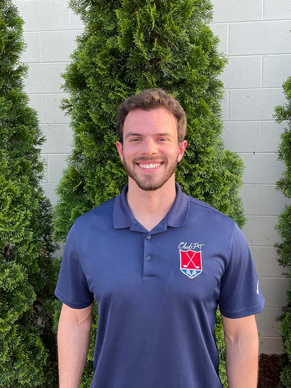

<ion-content [fullscreen]="true">
  <ion-grid class="ion-no-padding">
    <ion-row  class="ion-no-padding ion-no-margin">
      <ion-col size="12" class="ion-no-padding ion-no-margin">
        <ion-toolbar>
          <ion-buttons slot="end" class="ion-padding-end">
            <ion-menu-button color="light"></ion-menu-button>
          </ion-buttons>
           
        </ion-toolbar>
        <h1 #massage class="therapy-title"><span class="trueno-outline-h1">PHYSICAL</span><br>
          <span class="trueno-h1">THERAPY</span></h1>
        
      </ion-col>
      <ion-row>
        <ion-col size="12" class="ion-padding">
          <p>
            Need advice and help to allieve aches and pains? Make an appointment with Dr. Mason Dwinnell today.
          </p>
          <p>Dr. Dwinnell is a Certified Strength and Conditioning Specialist (CSCS), Titleist Performance Institute (TPI) Certified, 
            OnBaseU Certified, and Dry Needling Certified. His clinical interests include sports and athletic injuries, manual therapy, 
            pain science, spinal mobilization/manipulation, movement analysis, injury prevention and return to sport rehabilitation. 
            He is passionate about treating his patients with a compassionate and multifaceted approach that is individualized to 
            achieve the patient's goals.</p>
        </ion-col>
      </ion-row>
    </ion-row>
    <ion-row>
      <ion-col size="12" class="ion-padding ion-text-center">
        <h1><span class="trueno-outline">SCHEDULE </span>
          <span class="trueno">an APPOINTMENT</span></h1>
          <p>To schedule an appointment, call Dr. Mason Dwinnell at 
            <span (click)="callDrDwinnell()">919-724-8704</span>.
      </ion-col>
      <ion-col size="12" class="ion-text-center">
        
      </ion-col>
    </ion-row>
    <app-footer></app-footer>
  </ion-grid>
  
</ion-content>
